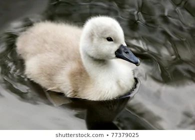

-
一、
鴨媽媽很高興孵著一窩蛋。
「不管牠們長得是高是胖，牠們都是我的寶貝孩子。」
鴨媽媽很細心地孵著蛋，終於，在春天的一個早上，鴨媽媽聽到很細很小的破殼聲。「啊！我的孩子要出生了！」
沒錯！ㄎㄧ ㄎㄨ ㄎㄧ ㄎㄨ從裂開的蛋殼裡面出來了好幾隻可愛的小鴨鴨，牠們啄破蛋殼，來到了這美麗的世界。
「一、二、三、四、五、六……嗯！咦？」鴨媽媽數著數著，發現還有一顆蛋居然還沒有破，咦？這小鴨鴨怎麼還留在蛋裡面不出來呢？話還沒說完，蛋殼慢慢地破了。
「哇！」所有的小鴨鴨都嚇了一跳，最後出來的第七隻小鴨，長得又大、又醜，怎麼看都怪怪的。
「哈哈哈！」牠的兄弟們都在笑牠。
「沒見過這麼奇怪的鴨子！」
「媽媽，牠怎麼長得這麼好笑？」
「媽媽，這是什麼怪獸啊？」
鴨媽媽非常溫柔的對孩子們說：「你們不要笑牠，牠長得跟你們不一樣，但是牠也是你們的兄弟啊！牠還是我最親愛的孩子。」鴨媽媽輕輕啄了一下這第七隻又大又醜的小鴨鴨。
很快的，小鴨鴨開始學游泳，鴨子要很會游泳喔！牠們玩耍要游泳、找東西吃要游泳，你看看，這幾隻小鴨，有點害怕的在水裡面慢慢地游著，鴨媽媽在池塘旁邊帶著滿足的微笑看著這群孩子。
「咦？那是什麼？」說也奇怪，第七隻又大又醜的小鴨鴨一到水裡就游得特別快。
「媽媽，牠怎麼游得那麼快？」
「媽媽，你是不是給牠吃了特別的東西？」
「媽媽，牠的姿勢好醜喔！」
「醜小鴨，醜小鴨，醜小鴨！」這些兄弟們看牠游泳游得又快又好，心裡有些嫉妒，就大聲的喊著醜小鴨，嘲笑這隻可憐的小鴨鴨，醜小鴨就成了牠的名字。
「媽媽，醜小鴨好好笑喔！牠的腳好大，走起路來搖搖晃晃的。」
「媽媽，醜小鴨看起來又大又笨，妳怎麼會生出這樣子的弟弟啊？」
鴨媽媽心裡很擔心，也不知道怎麼辦？只能說，「你們不要再笑牠，醜小鴨牠游得很好，也很乖，牠是我最可愛的孩子啊！」
話還沒有說完，在池塘旁邊的朋友也跟著在那開玩笑，青蛙說：「呱呱，呱呱，鴨媽媽，這孩子怎麼長得這麼奇怪？我從來沒看過這種鴨子，哈哈！哈哈！」
白鷺鷥叔叔也忍不住地問起鴨媽媽，「哎！鴨媽媽，牠是鴨子嗎？牠怎麼長得這麼……這麼……呃……不好看？」
雖然大家問得很禮貌，可是鴨媽媽心裡還是很難過，「我也不知道為什麼會這樣？但是請大家不要笑牠，牠是我的孩子，我會好好照顧牠。」
可是，池塘裡面的朋友和牠的哥哥們，因為覺得牠長得怪怪的，都常常嘲笑牠、或者是不理牠，慢慢的，醜小鴨愈來愈不開心、愈來愈孤單。

-
二、
這一天，從別的地方飛來了兩隻野鴨，「哇！這是什麼？這隻小鴨長得好怪喔！」
醜小鴨低下頭一句話也不說，忍不住就哭了起來，「你們大家都笑我，我也不希望長得怪啊！」
說完，醜小鴨忍不住地就放聲大哭起來，兩隻野鴨子就對他說：「哎呀！就不要哭了嘛！跟我們一起去旅行，飛到天空，愛去哪裡就去哪裡，別人笑你，你就不要理他嘛！」說著，其中一隻野鴨張開翅膀飛走了。
突然，「砰」的一聲，剛飛到天空去的野鴨被子彈打到掉在地上，馬上有一隻獵狗就把牠叼走了，醜小鴨嚇壞了，趕快逃走，逃啊逃啊逃的，牠就跑到一個屋子前面。
屋子裡面住著一個老婆婆、一隻貓，和一隻母雞。醜小鴨又餓又累，牠對老婆婆說：「老婆婆，我能在這邊休息一下嗎？」
老婆婆看看這一隻可憐的小鴨，就對牠說：「小鴨鴨，來！就住在我這裡吧！」可是，原來住在這屋子裡的貓和母雞並不喜歡牠，貓咪趁著老婆婆不注意的時候，用貓爪把老婆婆正在織的布給劃破了。母雞更誇張，居然跳到了桌上便便。
「怎麼會這樣？這是誰把我的布劃破了？哎呀！誰在我的桌上嗯嗯？」貓和母雞都沒說話，用眼睛望著醜小鴨，老婆婆看著醜小鴨，很生氣地對牠說，「小鴨鴨，貓咪會幫我抓老鼠，母雞每天為我生蛋，可是你才剛來這裡，什麼事情都不做，還到處搗亂，你還是走吧！」
醜小鴨很難過得離開了這間屋子，大家都很討厭牠，牠要走到哪裡去呢？
秋天過去了，冬天好冷喔！醜小鴨在池塘邊冷得直發抖，有位好心的農夫看到了牠，把牠帶回家，農夫的小孩看見了醜小鴨，都很喜歡牠，他們拼命跑過來，醜小鴨也很高興，以為可以交到新朋友，沒想到，農夫的小朋友有的扯扯牠的羽毛，一會兒又拉拉牠的翅膀、捏嘴巴、抓牠的腳，完了！他們把醜小鴨當作玩具玩。
醜小鴨很痛苦，為了躲避農夫的孩子們，牠拚命跑、拚命逃，在農夫的家裡面到處亂跑，一下打翻了油桶、一下撞翻了花架。
農夫非常地生氣，想要抓住醜小鴨，醜小鴨又逃啊逃，來到了一個水池邊，沒辦法就在這裡住下來了。這個冬天，醜小鴨就躲在水池裡，牠又冷、又餓，好不容易度過了冬天，溫暖的春天來了。
-
三、
這一天，春天的陽光灑在身上，醜小鴨覺得好舒服喔！牠伸伸懶腰、抖抖翅膀，哎！牠怎麼飛起來了？
牠覺得好奇妙，怎麼會這樣？牠用力拍打著翅膀，就愈飛愈高，飛啊飛啊！愈飛愈高，牠飛過了農場，又飛過了老婆婆的家，牠低頭看著在地上的母雞和花貓，牠還記得牠經過的地方，牠飛啊飛啊！經過了野鴨子的水池，回到了自己出生的地方。那不是牠六個哥哥嗎？牠們長大了！
沒錯，牠們就是六隻可愛的水鴨，牠的媽媽也在池塘旁，看樣子，心情有點悲傷，牠想趕快飛到媽媽的懷抱，醜小鴨正準備要降落在牠從小玩耍的池塘的時候，突然從天上飛來了三隻白色的天鵝。
其中帶頭的那一隻天鵝，開口對牠說，「喂！你要跟我們一起去旅行嗎？」
「我？」
「是啊！年輕的天鵝應該到處走走看看嘛！」
這時候醜小鴨慢慢地降落在水面，牠低頭看到自己映在水面上的影子，「我？我變成什麼了？」
三隻天鵝也飛下來說，「你怎麼啦？年輕的小天鵝。」
「我不是天鵝，牠們都叫我『醜小鴨』。」
「你說什麼？」
「牠說牠是鴨子。」
「竟然有天鵝覺得自己是鴨子？哈哈，這是今年春天我聽過最好笑的笑話了。」
「原來我不是醜小鴨，我是一隻天鵝啊！」牠望望池塘那邊，六隻驚訝的水鴨哥哥張著大嘴，都呆掉了；而牠的鴨媽媽對牠點點頭，帶著溫柔的微笑：「去吧！小天鵝！我的孩子。」
從此以後，牠去過很多地方，也認識很多新朋友，牠知道這世界上的每個人都不一樣，他要做一隻快樂的醜小鴨──喔！不！一隻快樂的天鵝，繼續新的旅程。